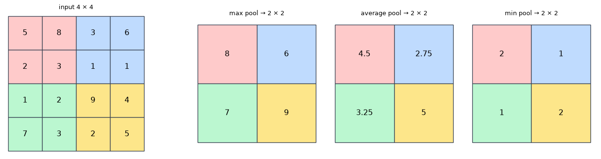
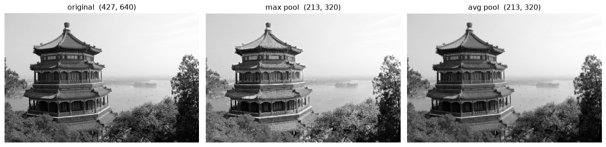

Pooling
Downsample the feature maps. No learned parameters — just a fixed reduction that shrinks spatial dimensions, reduces compute, grows the receptive field, and buys small-shift invariance.
01 Why pool
Three jobs at once
- Reduce compute. Halving spatial dimensions quarters the operations in all downstream layers.
- Grow receptive field. After pooling, each subsequent layer sees a larger region of the original image.
- Introduce small-shift invariance. A feature detected at pixel (10, 10) and the same feature at (11, 11) often fall in the same 2 × 2 window, so max pooling gives the same output for both.
No learned parameters
Unlike conv layers, pooling has zero parameters. It's a fixed function — pick a window, apply max/avg/etc., output a single number per window. Nothing to train.
Standard configuration
- Window size — 2×2 is overwhelmingly common.
- Stride — equals window size (non-overlapping windows). Stride 2 for a 2×2 window.
This halves both spatial dimensions in one call.
02 Types — max, average, min
| Pool type | Output | When to use |
|---|---|---|
| Max | Maximum of the window | Standard default — "did the feature appear anywhere here?" |
| Average | Mean of the window | Smoother; used in global pooling, some lightweight networks |
| Min | Minimum of the window | Rare — useful for detecting "dark" or inverse features |
| L2 | L2 norm of the window | Rare — smoother than max |
Max pooling dominates in practice. Average pooling makes a comeback as global average pooling at the end of networks.
03 Max pooling, illustrated

Python code for this figure
import numpy as np
import matplotlib.pyplot as plt
from matplotlib.patches import Rectangle
X = np.array([[5, 8, 3, 6], [2, 3, 1, 1], [1, 2, 9, 4], [7, 3, 2, 5]])
cols = {(0, 0): "#fecaca", (0, 1): "#bfdbfe", (1, 0): "#bbf7d0", (1, 1): "#fde68a"}
fig, axes = plt.subplots(1, 4, figsize=(14, 3.6), gridspec_kw={"width_ratios": [4, 2.4, 2.4, 2.4]})
def cell(ax, i, j, n, v, c):
ax.add_patch(Rectangle((j, n - 1 - i), 1, 1, fc=c, ec="#374151")); ax.text(j + 0.5, n - 0.5 - i, v, ha="center", va="center", fontsize=12)
for (i, j), v in np.ndenumerate(X):
cell(axes[0], i, j, 4, str(v), cols[(i // 2, j // 2)])
axes[0].set_title("input 4 × 4", fontsize=10); axes[0].set_xlim(-0.1, 4.1); axes[0].set_ylim(-0.1, 4.1)
for ax, (name, f) in zip(axes[1:], [("max", np.max), ("average", np.mean), ("min", np.min)]):
for a in range(2):
for b in range(2):
v = f(X[2 * a:2 * a + 2, 2 * b:2 * b + 2])
cell(ax, a, b, 2, f"{v:g}", cols[(a, b)])
ax.set_title(f"{name} pool → 2 × 2", fontsize=10); ax.set_xlim(-0.1, 2.1); ax.set_ylim(-0.1, 2.1)
for ax in axes: ax.set_aspect("equal"); ax.axis("off")
plt.tight_layout(); plt.show()The operation
Divide the input into non-overlapping windows (2×2 here). For each window, output the maximum value.
Why max works so well
- Preserves strong activations. The whole point of a feature map is to say "a feature is present here." Max keeps the strongest "present" signal in the local region.
- Robust to position jitter. If the feature moved by one pixel, the max probably didn't change.
- Fast gradient flow. The backward pass routes the gradient only through the argmax position — simple and sparse.
04 Average pooling, illustrated
The operation
Same windowing, but output the mean instead of max.
When average beats max
- Smoothness matters — averaging reduces noise more than max.
- The strong-activation story doesn't apply — e.g., at the very end of the network as global average pooling (below).
- Low-resource networks (MobileNet, etc.) sometimes prefer average for different numerical properties.
05 Min pooling (and when it's useful)
When it shows up
Rare in standard image classification. Useful when:
- Dark features are the target — detecting dark spots on a light background.
- Inverted feature maps — some domain-specific architectures.
- Theoretical exercises — mostly here for completeness.
In practice, max + a sign flip of the feature map does the same work. Few modern frameworks even implement MinPool2d directly.
06 Global pooling
The idea
Instead of a small window (2×2), the pooling window covers the entire spatial dimension. Input shape (N, C, H, W) → output shape (N, C, 1, 1) → flatten to (N, C).
- Global average pooling (GAP) — one average per channel across the whole feature map.
- Global max pooling (GMP) — one max per channel.
Where it's used
- Classification heads. GoogLeNet replaced the final dense layers with a GAP + single linear layer — hugely reducing parameters. See note 19.
- Attention mechanisms. GAP is often the first "aggregate per channel" step before computing attention weights.
- Modern CNNs generally use GAP as the bridge between the convolutional backbone and the classifier.
Why GAP > flatten + dense
Flattening a 7×7×512 feature map into a 25,088-dim vector followed by a 1,000-unit dense layer = 25M parameters. GAP collapses that to a 512-dim vector; the dense layer that follows has 512 × 1000 = 512k parameters — ~50× fewer, and empirically regularises better.
07 Pooling vs strided convolution
The question
Both reduce spatial dimensions. Both have the same output size for 2×2 window / stride 2. Which should you use?
| Method | Parameters | Expressivity | Common in |
|---|---|---|---|
| MaxPool(2) | 0 | Fixed function | Classic CNNs (LeNet, AlexNet, VGG) |
| Conv(stride=2) | Full | Learned downsampling | Modern CNNs (ResNet, EfficientNet) |
The modern view
Replacing pooling with strided conv is now standard practice. The reasoning:
- The downsampling itself becomes learnable, letting the network figure out how to subsample.
- It's one fewer layer to think about (conv + pool collapses to just conv).
- It can match or beat pooling (the "all-convolutional" networks of Springenberg et al., 2014), though max pooling remains a solid, parameter-free choice.
The classic "conv + ReLU + pool" block is still a fine choice: it is what the CNN in note 18 uses on Fashion-MNIST. For modern production models, strided conv is the standard.
08 Runnable demo
import torch
import torch.nn as nn
import numpy as np
import matplotlib.pyplot as plt
# The 4x4 input from the figure above
x = torch.tensor([[[[5, 8, 3, 6],
[2, 3, 1, 1],
[1, 2, 9, 4],
[7, 3, 2, 5]]]], dtype=torch.float32)
print(f"input shape: {tuple(x.shape)}")
print(x.squeeze().numpy())
# Max pooling 2x2 stride 2
maxpool = nn.MaxPool2d(2)
print(f"\nmax pool 2x2:\n{maxpool(x).squeeze().numpy().astype(int)}")
# Average pooling 2x2 stride 2
avgpool = nn.AvgPool2d(2)
print(f"\navg pool 2x2:\n{avgpool(x).squeeze().numpy()}")
# "Min pooling" via -max(-x)
min_pool = -nn.functional.max_pool2d(-x, 2)
print(f"\nmin pool 2x2:\n{min_pool.squeeze().numpy().astype(int)}")input shape: (1, 1, 4, 4) [[5. 8. 3. 6.] [2. 3. 1. 1.] [1. 2. 9. 4.] [7. 3. 2. 5.]] max pool 2x2: [[8 6] [7 9]] avg pool 2x2: [[4.5 2.75] [3.25 5. ]] min pool 2x2: [[2 1] [1 2]]
Pooling on a real image
from sklearn.datasets import load_sample_images
img = load_sample_images().images[0].mean(axis=2)
img_t = torch.tensor(img[None, None, :, :], dtype=torch.float32)
mp = nn.MaxPool2d(2)
ap = nn.AvgPool2d(2)
fig, axes = plt.subplots(1, 3, figsize=(14, 4))
axes[0].imshow(img, cmap='gray'); axes[0].set_title(f'original {img.shape}')
axes[1].imshow(mp(img_t)[0, 0], cmap='gray'); axes[1].set_title(f'max pool {tuple(mp(img_t).shape[2:])}')
axes[2].imshow(ap(img_t)[0, 0], cmap='gray'); axes[2].set_title(f'avg pool {tuple(ap(img_t).shape[2:])}')
for ax in axes: ax.axis('off')
plt.tight_layout(); plt.show()
Global average pooling
# Simulate a feature map coming out of a CNN
features = torch.randn(1, 512, 7, 7) # typical late-layer shape
print(f"before GAP: {tuple(features.shape)}")
# Standard way: nn.AdaptiveAvgPool2d(1) collapses to (N, C, 1, 1)
gap = nn.AdaptiveAvgPool2d(1)
pooled = gap(features)
print(f"after GAP: {tuple(pooled.shape)}")
# Then flatten and classify
flat = pooled.flatten(1)
print(f"flattened: {tuple(flat.shape)}")
classifier = nn.Linear(512, 1000) # single dense layer -> 1000 classes
logits = classifier(flat)
print(f"logits: {tuple(logits.shape)}")
print(f"\n# params in classifier: {sum(p.numel() for p in classifier.parameters()):,}")
print(f"vs. flatten-and-dense: {25088 * 1000:,} = ~{25088*1000 / sum(p.numel() for p in classifier.parameters()):.0f}x more")before GAP: (1, 512, 7, 7) after GAP: (1, 512, 1, 1) flattened: (1, 512) logits: (1, 1000) # params in classifier: 513,000 vs. flatten-and-dense: 25,088,000 = ~49x more